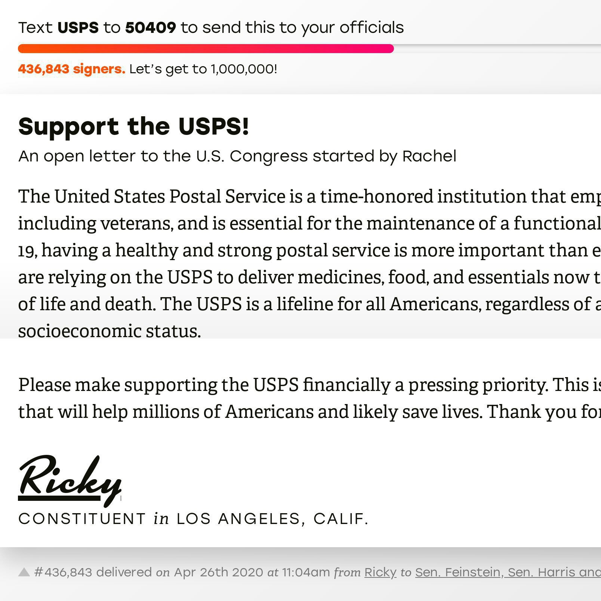

Stop creating and enforcing an environment where whiteness, masculinity, and privilege are centered and protected at all costs.
I was already disappointed with what Manton had written about the mass exodus from Basecamp, but parachuting into this thread with the implication I was being incivil, when I had gone to great lengths to be kind and gentle to someone insisting white Christian men do not have privilege, means I can no longer participate in or support micro.blog.
I have thought it over for several days, and I remain convinced I should cancel my subscription.
look past your privilege and stand up for those that need it.
NEW Turtleburger MASK UP! design by Ricky added to Famebot Teemill store
i think i’m about to pull the trigger on a maxed arm mbp.
i need to be able to edit video else i’d get the air
not happy about the idea of a touchbar but everything else seems unreal
i wish there was a 16 in arm mbp now, but then it would prolly cost double lol apple 💸
From Hijras in India to māhūs in Hawaii, there have always been people whose gender doesn’t fit into the stereotype of what it means to be a man or woman.
The notion that both sex and gender are binary […] is a social construct.
– Mere Abrams, Nonbinary: What Does It Mean?
micro.blog iOS: @manton I feel like the profile (avatar/bio) should scroll with the timeline on the iPhone instead of being fixed, with larger text sizes this becomes an accessibility/usability issue. (updated image, uncropped now)
Boxing training 📷🥊⛲️
Echo Park, Los Angeles, California, USA 🏙🐻🇺🇸
taken at 09:51 local time 2020-10-14 🕙
A Day In The Life #adayinthelife
Cut to 2025 when people start waking up to ring flying drones hovering in their bedrooms unannounced.
A pair of timely articles to counter deceptive propaganda that suggests destroying the working class is somehow good for the economy. First up, Steven Rattner on Trump’s lies about dwindling jobs, handouts to the ultra-rich, and the exploding deficit.
📷 frosty ☃️❄️ day 24 of August 2020 Photoblogging Challenge near Mount Zion in Big Santa Anita Canyon, part of Southern California’s San Gabriel Mountains, and one of the most popular and historically-significant spots in the Angeles National Forest. BONUS! Rattlesnake footage
To: eoliphant@co.monroe.in.us Subject: Attempted lynching of Bloomington man at Lake Monroe
Ms. Oliphant,
It is your duty to see the offenders in this attempted lynching arrested and brought to justice.
Video shows racist attack directed at Bloomington Man on 4th of July
Victim Vauhxx Rush Booker’s eyewitness account
This is obviously a hate crime and should be treated as such.
In Booker’s own words:
Two of them jumped me from behind and knocked me to the ground. I tussled with the two and another one joined in, then two more. The five were able to easily overwhelm me and got me to the ground and dragged me pinning my body against a tree as they began pounding on my head and ripped off some of my hair, with several of them still on top of my body holding me down. They held me pinned and continued beating me for several minutes seemingly become more and more enraged as they kept trying to seriously injure me and failing. At one point during the attack one of the men jumped on my neck. I could feel both his feet and his full bodyweight land hard against my neck.
At this point the commotion and the sounds one of the men’s young teenage daughter screaming for her father and the others to let me go started attracting more people, (most whom I didn’t know) who started attempting to intervene. The attackers told the growing group, “we’re going to break his arms†(while literally attempting to bend my arms behind me) and then stated to the members of their party several times to, “get a noose”, amongst some other choice slurs. With me still pinned underneath them they kept telling onlookers to leave the, “boy†and that everyone else (all white) could go. Folks then started filming the confrontation, and shouting that they wouldn’t leave me to be killed.
Imagine this happening to you. Imagine the rage you would feel if:
When DNR eventually arrived they didn’t contact us to ensure that no one was injured, instead they went directly to speak with the other individuals (attackers) first. When they finally came to the beach near our campsite where we were all waiting, multiple individuals who didn’t know each other shared videos and relayed that the individuals had yelled “white power†and a litany of other derogatory remarks, and threatened my life multiple times, and also assaulted an approximately 60 year old man who stopped to film the encounter. Yet DNR refused to arrest any of these individuals, even with multiple the witnesses several who filmed the event and collaborated our accounts. Instead the officers stated they contacted the Prosecutor’s office who relayed there was no immediate need to arrest anyone, and that the officers would simply file a report.
And:
Bloomington we’ve had three public incidents involving overtly racists individuals who were then backed by the police within a month. Are we going to wait for a Black person to be lying dead in the gutter before we act? When is enough actually enough?
So simply charging the racist lynch mob with assault and attempted murder is not enough in this case. Your office should work to ensure that the officers who responded to this call are relieved of duty, and their superiors held accountable for their inaction and dereliction of their responsibility to public safety.
Ricky de Laveaga
my friend jen is dj-ing live
So @maique agreed to send me a digital negative of a photo to make a print of one of his masterpieces for what amounted to a suggested donation and all I can say is it feels like the deal of the century.
I felt a great disturbance in the Web, as if millions of gifs suddenly cried out in terror and were suddenly silenced.
“Our clients are the only detained children we know of who ICE is insisting on deporting even though: 1) they have a parent in the U.S. who ORR recommends they be reunified with, 2) they have no parent or other relative in their home country who can take care of them, and 3) they are really, really young — only 8 and 11,” Syed said.
Ol Judy. LA River near Sunnynook River Park 📷🏞💙
LA River near Sunnynook River Park 📷🌳💚
Beaker is now using the Hypercore Protocol. […] You can read about the new features in the Hypercore Protocol blog: Announcing Hyperdrive v10
rdela/microblog-bookmarklet.js
post link and optional selection to micro.blog mac app · GitHub
The Window.getSelection() method returns a Selection object representing the range of text selected by the user or the current position of the caret.
Manton and Daniel talk about iA Writer’s new support for publishing directly to Micro.blog, and segue in to a conversation about the pragmatism of trying to improve SEO for pertinent terms such as “Micropub†and “WordPress.”
Often, while building a website, clients and designers will ask something like:
Will you make the links open in a new tab so we don’t take people off the site?
I’ve concluded that open hardware is precisely as trustworthy as closed hardware. Which is to say, I have no inherent reason to trust either at all. While open hardware has the opportunity to empower users to innovate and embody a more correct and transparent design intent than closed hardware, at the end of the day any hardware of sufficient complexity is not practical to verify, whether open or closed. Even if we published the complete mask set for a modern billion-transistor CPU, this “source code†is meaningless without a practical method to verify an equivalence between the mask set and the chip in your possession down to a near-atomic level without simultaneously destroying the CPU.
💬 Andrew “bunnie†Huang, Can We Build Trustable Hardware?
Let’s take some privacy back. If Spectrum is your internet service provider you should take a minute to go here and opt-out of everything. If you have a different ISP, reply with the correct link for them.
people in my neighborhood have been tacking up kids drawings to the telephone poles and I love it. ❤️📷🌈 #mbmay micro.welltempered.net/2020/04/2…
💬 “There is, in practice, no such thing as autonomy. Practically, there is only a distinction between responsible and irresponsible dependence.†—Wendell Berry www.plough.com/en/topics… #mbmay micro.welltempered.net/2020/04/2…
💬 “The history of the U.S., the history of Americans, is the history of reconciling the unreconcilable: individual freedom & community freedom. There is no way to reconcile the enduring psyche of the slaveholder with the enduring psyche of the enslaved.†– Ibram X. Kendi
💬 Laugh it up, fuzzball! source
💬 Luminous beings are we, not this crude matter. source
Support USPS! Text ‘USPS’ to 50409 or visit resist.bot to set up iMessage on iPhone, iPad, or Mac. 🦅📬📦 🇺🇸

Day 1 of the 30 day photo challenge Elysian Park 📷 see more photos
Thought of @danielpunkass and Swish (maybe this should go on the marketing page?): The Color of Noise: What Do Hues Have to Do with Sound?
Added an update to CSS I added to the Hello theme about missing img { height: auto } in Hello theme .
Labor Day Weekend Wisdom™ We all feel out of place—overwhelmed by the complexity, inscrutable errors, and roadblocks that are an everyday fact of life—all the time.
James Rosenquist | Gift Wrapped Doll #16 | The Met www.metmuseum.org/art/colle…
If you are not safe at the Garlic Festival, where are you safe? www.kqed.org/news/1176…
📜 IndieWeb transcript @manton with @t and @aaronpk on @monday via the 8 July newsletter
Update 30 August 2019 Hello theme is missing img { height: auto }, added below.
CSS I added to the Hello theme, the only dark theme in the micro.blog theme gallery. It even has a light/dark switcher! See modifications at m.rdela.com (if you are coming from elsewhere).
img {
display: block;
max-width: 100%;
height: auto; /* hello theme is missing height: auto */
}
.logo__cursor,
.logo__mark,
.footer .copyright span:first-child {
display: none;
}
body.dark-theme {
background: #000;
}
.dark-theme .header,
.header {
background: transparent;
}
.content {
flex-direction: column;
flex: 1 auto;
align-items: center;
margin: 40px 0;
padding: 0 20px;
}
p.h-entry,
.post {
width: 100%;
max-width: 760px;
text-align: left;
padding: 20px 0 40px;
margin: 0 auto 20px;
}
p.h-entry:not(:last-of-type),
.post:not(:last-of-type) {
border-bottom: 1px solid #dcdcdc;
border-bottom: 1px solid var(--light-border-color);
}
.dark-theme p.h-entry:not(:last-of-type),
.dark-theme .post:not(:last-of-type) {
border-color: #4a4b50;
border-color: var(--dark-border-color);
}
.post-content {
margin-top: 20px;
}
.post-content p:last-of-type {
margin-bottom: 0;
}
.post-meta {
font-size: 1rem;
margin: 0;
}
.post-title {
font-size: 1.875rem;
margin: 0;
}
.logo__cursor hides the blinky “cursor,†down with all blinky things
.logo__mark gets rid of the > shaped SVG thing in front of the site name
.footer .copyright span:first-child hides the incorrect “Powered by Hugo†link.
body.dark-theme and .dark-theme .header darken the background from #292a2d and #252627 to true black (#000) for enhanced contrast and battery saving on mobile devices with OLED screens. To make the light theme header transparent, which looks better and more pleasantly minimal to me, we add plain .header in addition to the more specific .dark-theme .header, which we need to override a preexisting more specific declaration.
Do you think I should PR any of these changes? (See live at m.rdela.com.) Or are they worthy of a new theme? I could alter or remove those elements altogether instead of hiding them. I have a few more ideas for changes to the color and text scale/sizing as well. Suggestions welcome!
I wrote a post about the Evite breach you can send to friends and family if the need arises rdela.com/evitten-t…
Watch this video on the lawless giant internet conglomerate site about how the huge tech companies have become unaccountable and impossible to regulate tools of political criminals and oligarchs. Please share! 😬 www.youtube.com/watch
🎞📷🌊 waves 👋 of beautification via @miraz / micro.blog newsletter miraz.me/2019/06/0…
way to go @danielpunkass MARSEDIT 4 BETA
¡Congratulations to @brentsimmons on Evergreen d11!
{kind=link}
{kind=link}